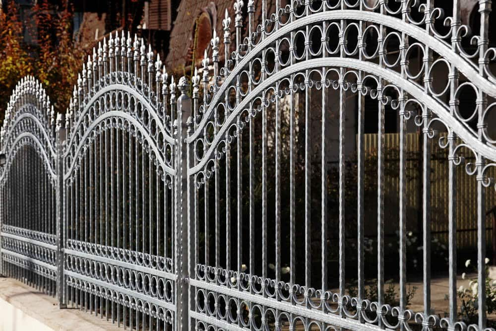
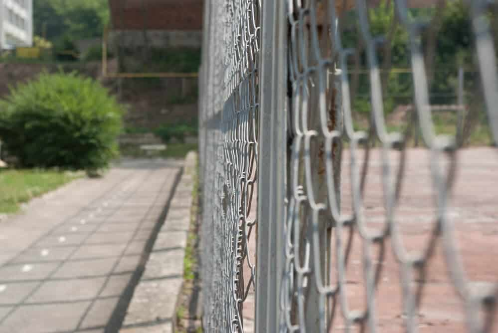

In This Guide
- The best fence is the one that fits your main goal: privacy, an open view, a tight budget, low upkeep, or curb appeal.
- A quick decision table pairs each priority with the materials that usually suit it and the drawback to watch for.
- Louisiana humidity, heavy rain, termites, and storm winds narrow the field, especially for wood and for solid, tall panels.
- Confirm HOA and city or parish rules on height and materials before choosing, so the fence you like is one you can build.
Picking a fence can feel like a wall of options: wood, vinyl, chain link, aluminum, wrought iron, and more, each in several styles. The way through is to stop comparing materials and start with what you need the fence to do. This guide is built as a decision path, so you can match your priorities to the choices that fit.
Big Easy Fence helps homeowners make this choice, and one clear priority makes the rest of the decision much easier. If you want a style-by-style tour instead, see our overview of types of home fences.
Start With the Job, Not the Material
Before you look at samples, answer three questions. What is the fence mainly for? How much time will you spend on upkeep? And what does the budget look like? Your first answer picks the category, the second narrows it, and the third sets the range you shop in.
Also write down what you do not want. Some people hate the look of chain link, and others refuse to repaint anything every few years. Ruling things out is as useful as choosing.
Match the Fence to Your Priority
This table pairs each common priority with the materials that usually serve it, and the trade-off to expect. Treat it as a starting shortlist, not a final answer.
| Your Priority | Materials to Start With | Trade-Off to Expect |
|---|---|---|
| Privacy | Wood, vinyl, composite | Solid panels catch more wind |
| Open View | Aluminum, wrought iron, chain link | Little screening from neighbors |
| Tight Budget | Chain link, wood | Chain link is plain, wood needs upkeep |
| Low Upkeep | Vinyl, aluminum, composite | Higher cost at the start |
| Curb Appeal | Wrought iron, wood, masonry | Wrought iron and masonry cost more |
| Pets and Kids | Aluminum, vinyl, chain link | Check gap size and gate latches |
Fences by Need
If You Want Privacy
Wood, vinyl, and composite all come in solid-panel styles that screen the yard. Wood is the classic and easy to customize, but in Louisiana humidity it needs steady sealing to fend off rot, and termites are a concern. Vinyl skips the painting and does not feed termites, though it costs more up front and can fade or crack. Composite gives a wood-like look with less care, at a higher price. Whichever you pick, remember that a tall solid fence catches wind, so strong posts matter. Our wood fences page shows how these are built.
If You Want an Open View
Aluminum, wrought iron, and chain link keep sight lines clear. That works well around a pool, a garden, or a corner lot, and it suits a neighborhood where the fence is meant to be decorative rather than screening. Aluminum will not rust, but its finish needs to stay intact. Iron and steel rust once paint or coating wears through, so plan on touch-ups.

If You Are Watching Your Budget
Chain link is usually the most affordable way to enclose a lot, and wood tends to sit below vinyl and metal on price. Look past the first invoice, though. Wood asks for sealing and repairs, while chain link asks for very little. Slats or screening can add privacy to chain link later if you change your mind.

If You Want Low Upkeep
Vinyl and aluminum ask for washing and the occasional check. Composite is close, though some products fade. No fence is maintenance-free, and every one benefits from a look after heavy storms. Our page on aluminum fencing explains what its finish needs.
If You Want Curb Appeal
Wrought iron looks formal and works well with older homes. Wood adds warmth and can be stained to match the house. Masonry or brick pillars combined with metal panels give a substantial, finished look. Match the style to the house and the street, since a fence that echoes the home's lines usually looks best.
Louisiana Conditions That Narrow the Field
Our weather is hard on fences, and it should be part of the choice.
- Humidity and rain. Moisture drives rot and warping in wood, and it wears away protective finishes on metal.
- Termites. Wood in or near the ground is at risk. Vinyl, aluminum, and steel give them nothing to eat.
- Heat and sun. Strong sun can fade vinyl and composite and dry out painted wood.
- Storms and wind. Solid panels take more wind load than open ones. Good posts and footings matter more than the choice of material.
None of these rules out a material. They simply tell you what upkeep to expect, and what to ask a contractor about.
Check the Rules Before You Choose
Your city or parish and your HOA can limit fence height, materials, colors, and placement. A style you love may not be allowed in a certain yard area, or may need design approval. Confirm both before you settle on anything. The details on how to do that are in our guide to fence height regulations.
Ask what the fence will need from you over the next ten years, how the posts are set, and how gates are supported. Comparing answers tells you more than comparing quotes.
Making the Final Call
Rank your priorities, pick the top one, and use the table to build a shortlist of two or three materials. Then compare those on upkeep, Louisiana durability, and rules. A site visit usually settles it. When you are ready to price the options, reach out about residential fencing and bring photos of the yard, a rough budget, and any HOA guidelines.
Ready to Narrow Down Your Options?
Tell us your top priority and your budget range, and we will suggest the styles worth pricing for your property.